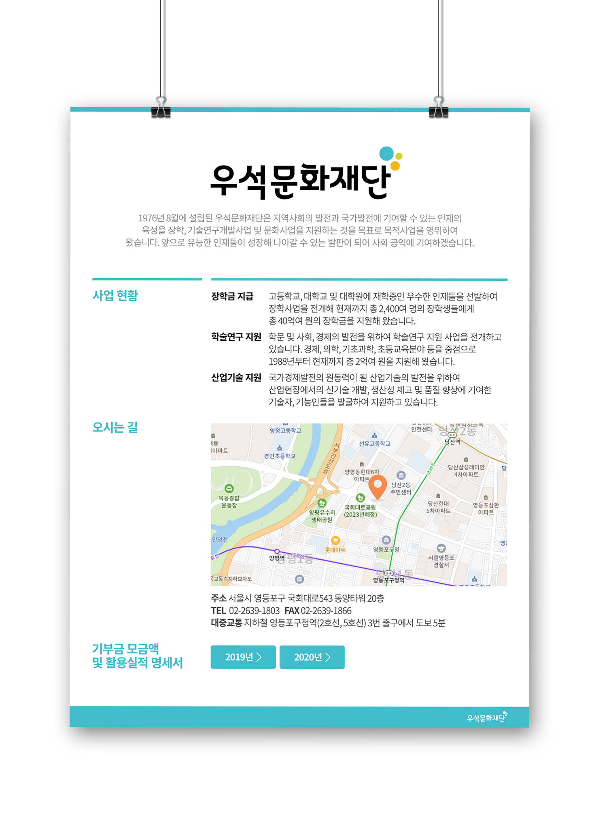

우석원 문화재단 팝업

OVERVIEW
TCCSTEEL의 우석문화재단의 기부금 모금액 명세서를 홈페이지에 보여주기 위한 팝업 창 디자인을 작업하였습니다. 고객의 요청에 따라 팝업 창에는 사업 현황과 오시는 길 내용을 포함하였습니다. 또한, 기부금 명세서는 연도별로 버튼으로 디자인하여 사용자가 편리하게 필요한 정보를 선택하여 확인할 수 있도록 하였습니다. 이 디자인은 사용자들이 목표로 하는 정보에 빠르게 접근할 수 있도록 설계되었습니다. 또한, 시각적으로 깔끔하고 사용자가 이해하기 쉬운 인터페이스를 제공하여 사용자 경험을 향상시켰습니다.
- TYPE.
- Web design
- CLIENT.
- TCC스틸
- Individual work.
- 1 Day
- 작업내역
- Photoshop, Illustrator
